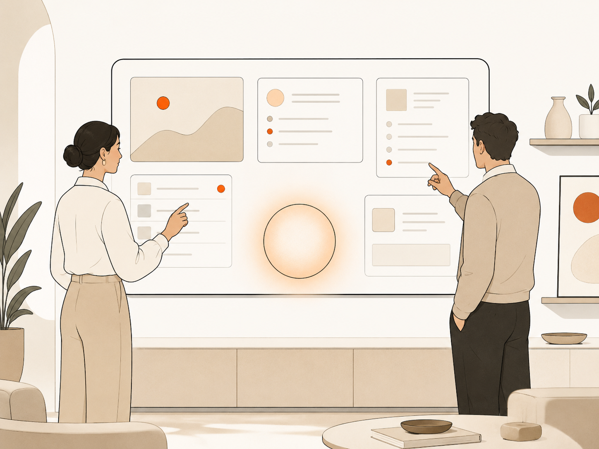

PHOTO
（差し替え）
（差し替え）
桜木佑歩
【一言を挿入。】


雑務に埋もれて発揮されない才能を、AIと仕組みの力でほどいていく。
それが、私たちのすべての仕事の出発点です。
AUTHENTRICのシンボルは、頭文字の「A」を、有機的で人間味のあるかたちに抽象化したものです。 丸みを帯びた3つの頂点は、個人・AI・組織を表しています。
それらが1本のなめらかな線でつながることで、個人の可能性がAIによって拡張され、 組織の中でより大きな価値へ接続されていく——その構造を、かたちにしました。
尖りすぎないこの「A」に込めたのは、人間をAIで機械的に最適化するのではなく、 人間の本質、その人らしさを起点に、AIと組織の力を組み合わせて、 一人ひとりが最も価値を発揮できる状態をつくるという思想です。
経営戦略も、会議の議事録も、日々のタスクの進捗も、すべてがAIエージェントと人が同じ場所で読み書きできる仕組みの上に置かれています。 誰が・何を・いつまでに。どこまで進んで、何が詰まっているか。それをAIが把握し、人が判断する。 この会社の運営そのものが、私たちの言う「AI業務OS」の実働環境です。
だから、私たちの提案には元ネタがあります。お客様にお渡しする役割カードも、品質チェックの関所も、 情報の置き場所の設計も、私たち自身が毎日その上で働いている仕組みから持ってきたものです。 うまくいった部分だけでなく、つまずいた記録も含めて、お見せしながら進めます。

【一言を挿入。】
【一言を挿入。】
| 社名 | AUTHENTRIC【正式社名確定後に更新】 |
|---|---|
| 代表者 | 【代表者名】 |
| 所在地 | 【所在地】 |
| 設立 | 【設立年月】 |
| 事業内容 | AI業務OSの設計・構築 / AIエージェント導入支援・研修 |
| お問い合わせ | お問い合わせフォームよりご連絡ください |